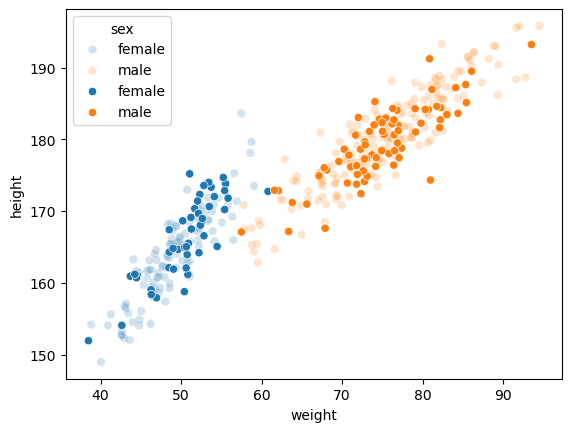
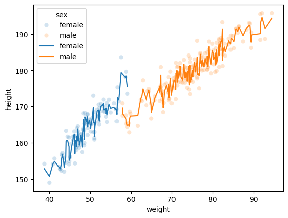
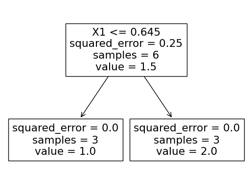
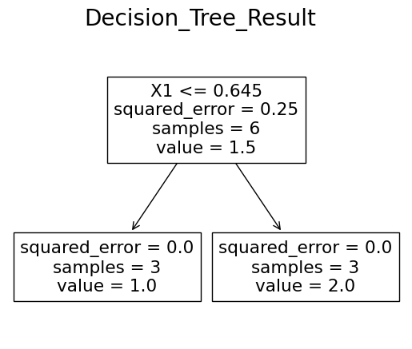
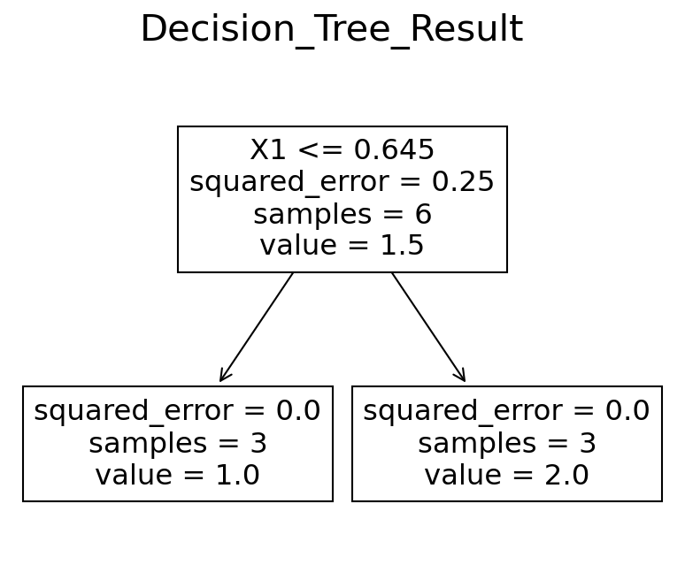
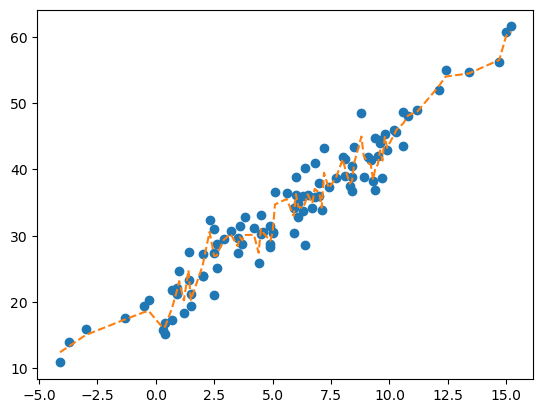
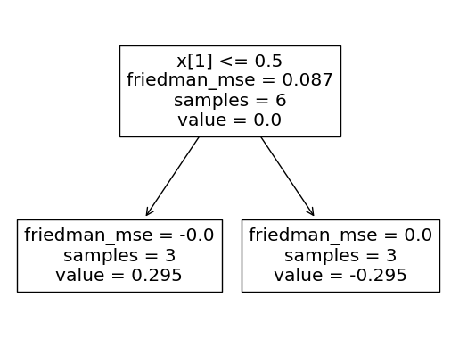

import numpy as np
import pandas as pd
import matplotlib.pyplot as plt
import seaborn as sns
import sklearn.tree
import sklearn.ensemble11wk:
1. Tree와 관련된 옵션
random state
df_train = pd.DataFrame({
'X1':[-0.609, 0.240, 0.605, 0.685, 0.739, 1.605],
'X2':[ 1. , 1. , 1. , 0. , 0. , 0. ],
'y':[1., 1., 1., 2., 2., 2.]
})X = df_train[['X1','X2']]
y = df_train['y']predictr = sklearn.tree.DecisionTreeRegressor()
predictr.fit(X,y)DecisionTreeRegressor()In a Jupyter environment, please rerun this cell to show the HTML representation or trust the notebook.
On GitHub, the HTML representation is unable to render, please try loading this page with nbviewer.org.
DecisionTreeRegressor()
max_feature
np.random.seed(42)
data = np.array(['male'] * 500 + ['female'] * 500)
def sample_data(data, male_prob, female_prob, size):
male_sample = np.random.choice(data[data=='male'], size=int(size * male_prob))
female_sample = np.random.choice(data[data=='female'], size=int(size * female_prob))
return np.concatenate([male_sample, female_sample])
train = sample_data(data, 0.8, 0.2, 280)
test = sample_data(data, 0.2, 0.8, 120)
np.random.shuffle(train)
np.random.shuffle(test)
sex = np.concatenate([train,test])
weight = np.random.randn(400)*7
height = np.random.randn(400)*3
for i,s in enumerate(sex):
if s =='male':
weight[i] = 75+weight[i]
height[i] = height[i]+0.8*weight[i]+120
else:
weight[i] = 50+weight[i]*0.6
height[i] = height[i]+1.3*weight[i]+100
df = pd.DataFrame({'weight':weight,'sex':sex,'height':height})
df_train, df_test = sklearn.model_selection.train_test_split(df,test_size=120)sns.scatterplot(df_train,x='weight',y='height',hue='sex',marker='o',alpha=0.2)
sns.scatterplot(df_test,x='weight',y='height',hue='sex',marker='o')<Axes: xlabel='weight', ylabel='height'>
X = pd.get_dummies(df_train)[['weight','sex_female','sex_male']] # drop_first 를 하는게 더 좋긴한데요, 설명을 위해서..
y = df_train['height']predictr = sklearn.ensemble.RandomForestRegressor(max_features=1)predictr.fit(X,y)RandomForestRegressor(max_features=1)In a Jupyter environment, please rerun this cell to show the HTML representation or trust the notebook.
On GitHub, the HTML representation is unable to render, please try loading this page with nbviewer.org.
RandomForestRegressor(max_features=1)
sns.scatterplot(df_train,x='weight',y='height',hue='sex',marker='o',alpha=0.2)
sns.lineplot(df_train,x='weight',y=predictr.predict(X),hue='sex')<Axes: xlabel='weight', ylabel='height'>
2. 시각화
sklearn.tree.plot_tree(
predictr,
feature_names= ['X1','X2']
)
fig = plt.gcf()
fig.suptitle("Decision_Tree_Result",size=20)Text(0.5, 0.98, 'Decision_Tree_Result')fig
fig.get_dpi()100.0fig.set_dpi(150)
fig
2. 배깅
np.random.seed(43052)
temp = pd.read_csv('https://raw.githubusercontent.com/guebin/DV2022/master/posts/temp.csv').iloc[:,3].to_numpy()[:100]
temp.sort()
eps = np.random.randn(100)*3 # 오차
icecream_sales = 20 + temp * 2.5 + eps
df_train = pd.DataFrame({'temp':temp,'sales':icecream_sales})
df_train| temp | sales | |
|---|---|---|
| 0 | -4.1 | 10.900261 |
| 1 | -3.7 | 14.002524 |
| 2 | -3.0 | 15.928335 |
| 3 | -1.3 | 17.673681 |
| 4 | -0.5 | 19.463362 |
| ... | ... | ... |
| 95 | 12.4 | 54.926065 |
| 96 | 13.4 | 54.716129 |
| 97 | 14.7 | 56.194791 |
| 98 | 15.0 | 60.666163 |
| 99 | 15.2 | 61.561043 |
100 rows × 2 columns
## step1
X = df_train[['temp']]
y = df_train['sales']
## step2
predictr = sklearn.ensemble.BaggingRegressor()
## step3
predictr.fit(X,y)
## step4 -- pass
# predictr.predict(X) BaggingRegressor()In a Jupyter environment, please rerun this cell to show the HTML representation or trust the notebook.
On GitHub, the HTML representation is unable to render, please try loading this page with nbviewer.org.
BaggingRegressor()
trees = predictr.estimators_samples = predictr.estimators_samples_trees[1].predict(X)/home/cgb2/anaconda3/envs/ag/lib/python3.10/site-packages/sklearn/base.py:458: UserWarning: X has feature names, but DecisionTreeRegressor was fitted without feature namesarray([14.0025235 , 14.0025235 , 15.92833474, 15.76077374, 15.76077374,
15.76077374, 15.76077374, 16.85168046, 16.85168046, 17.29135111,
17.29135111, 21.83665228, 21.83665228, 21.83665228, 18.34698175,
27.5369675 , 27.5369675 , 19.35814522, 19.35814522, 25.60634212,
25.60634212, 25.60634212, 32.42440294, 21.09890576, 21.09890576,
21.09890576, 28.09502366, 28.09502366, 29.55903213, 30.75418385,
27.39353391, 27.39353391, 27.39353391, 27.39353391, 27.39353391,
25.9552363 , 25.9552363 , 25.9552363 , 25.9552363 , 25.9552363 ,
28.77913678, 28.77913678, 28.77913678, 30.47132105, 30.47132105,
36.55080009, 30.35623814, 30.35623814, 30.35623814, 37.4829917 ,
37.4829917 , 32.76368326, 32.76368326, 35.41843425, 35.41843425,
40.1783271 , 40.1783271 , 36.08400962, 34.22629655, 35.86837964,
35.86837964, 36.83742646, 36.83742646, 33.93877582, 33.93877582,
33.93877582, 41.86734269, 41.86734269, 39.9036573 , 39.9036573 ,
39.32604237, 39.32604237, 39.32604237, 39.32604237, 39.32604237,
48.56374143, 48.56374143, 36.83769073, 36.83769073, 36.83769073,
36.83769073, 36.83769073, 36.83769073, 43.96756583, 43.96756583,
43.96756583, 45.27629809, 42.92028786, 45.91596595, 45.91596595,
48.09778984, 48.09778984, 48.09778984, 48.09778984, 51.91224393,
51.91224393, 54.71612873, 56.19479095, 60.66616291, 60.66616291])samples[0]array([41, 57, 94, 59, 65, 80, 27, 62, 46, 1, 39, 10, 71, 57, 15, 67, 87,
80, 50, 47, 12, 99, 1, 91, 91, 79, 92, 16, 12, 84, 99, 80, 2, 4,
89, 69, 8, 22, 7, 62, 93, 29, 59, 38, 61, 26, 18, 30, 28, 80, 36,
35, 62, 70, 54, 19, 1, 21, 16, 72, 12, 49, 97, 91, 93, 16, 82, 10,
84, 51, 3, 33, 36, 27, 28, 91, 84, 77, 3, 21, 64, 21, 69, 61, 50,
26, 24, 56, 85, 61, 13, 10, 71, 64, 97, 68, 64, 43, 64, 86])pre = sklearn.tree.DecisionTreeRegressor()
pre.fit(np.array(X)[samples[1]],np.array(y)[samples[1]])DecisionTreeRegressor()In a Jupyter environment, please rerun this cell to show the HTML representation or trust the notebook.
On GitHub, the HTML representation is unable to render, please try loading this page with nbviewer.org.
DecisionTreeRegressor()
pre.predict(X)/home/cgb2/anaconda3/envs/ag/lib/python3.10/site-packages/sklearn/base.py:458: UserWarning: X has feature names, but DecisionTreeRegressor was fitted without feature namesarray([14.0025235 , 14.0025235 , 15.92833474, 15.76077374, 15.76077374,
15.76077374, 15.76077374, 16.85168046, 16.85168046, 17.29135111,
17.29135111, 21.83665228, 21.83665228, 21.83665228, 18.34698175,
27.5369675 , 27.5369675 , 19.35814522, 19.35814522, 25.60634212,
25.60634212, 25.60634212, 32.42440294, 21.09890576, 21.09890576,
21.09890576, 28.09502366, 28.09502366, 29.55903213, 30.75418385,
27.39353391, 27.39353391, 27.39353391, 27.39353391, 27.39353391,
25.9552363 , 25.9552363 , 25.9552363 , 25.9552363 , 25.9552363 ,
28.77913678, 28.77913678, 28.77913678, 30.47132105, 30.47132105,
36.55080009, 30.35623814, 30.35623814, 30.35623814, 37.4829917 ,
37.4829917 , 32.76368326, 32.76368326, 35.41843425, 35.41843425,
40.1783271 , 40.1783271 , 36.08400962, 34.22629655, 35.86837964,
35.86837964, 36.83742646, 36.83742646, 33.93877582, 33.93877582,
33.93877582, 41.86734269, 41.86734269, 39.9036573 , 39.9036573 ,
39.32604237, 39.32604237, 39.32604237, 39.32604237, 39.32604237,
48.56374143, 48.56374143, 36.83769073, 36.83769073, 36.83769073,
36.83769073, 36.83769073, 36.83769073, 43.96756583, 43.96756583,
43.96756583, 45.27629809, 42.92028786, 45.91596595, 45.91596595,
48.09778984, 48.09778984, 48.09778984, 48.09778984, 51.91224393,
51.91224393, 54.71612873, 56.19479095, 60.66616291, 60.66616291])plt.plot(X,y,'o')
plt.plot(X,predictr.predict(X),'--')
4. 랜덤포레스트
predictr = sklearn.ensemble.RandomForestRegressor()X,y(array([[-0.609, 1. ],
[ 0.24 , 1. ],
[ 0.605, 1. ],
[ 0.685, 0. ],
[ 0.739, 0. ],
[ 1.605, 0. ]]),
array([1, 1, 1, 2, 2, 2]))predictr.fit(X,y)RandomForestRegressor()In a Jupyter environment, please rerun this cell to show the HTML representation or trust the notebook.
On GitHub, the HTML representation is unable to render, please try loading this page with nbviewer.org.
RandomForestRegressor()
5. 부스팅
predictr = sklearn.ensemble.GradientBoostingRegressor() X,y(array([[-0.609, 1. ],
[ 0.24 , 1. ],
[ 0.605, 1. ],
[ 0.685, 0. ],
[ 0.739, 0. ],
[ 1.605, 0. ]]),
array([1, 1, 1, 2, 2, 2]))predictr.fit(X,y)GradientBoostingRegressor()In a Jupyter environment, please rerun this cell to show the HTML representation or trust the notebook.
On GitHub, the HTML representation is unable to render, please try loading this page with nbviewer.org.
GradientBoostingRegressor()
sklearn.tree.plot_tree(predictr.estimators_[5][0])[Text(0.5, 0.75, 'x[1] <= 0.5\nfriedman_mse = 0.087\nsamples = 6\nvalue = 0.0'),
Text(0.25, 0.25, 'friedman_mse = -0.0\nsamples = 3\nvalue = 0.295'),
Text(0.75, 0.25, 'friedman_mse = 0.0\nsamples = 3\nvalue = -0.295')]